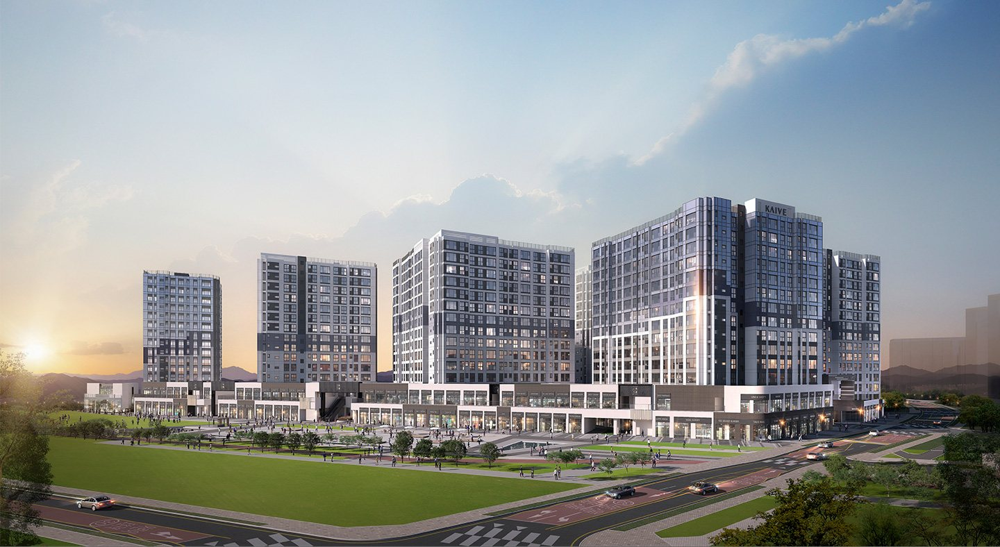
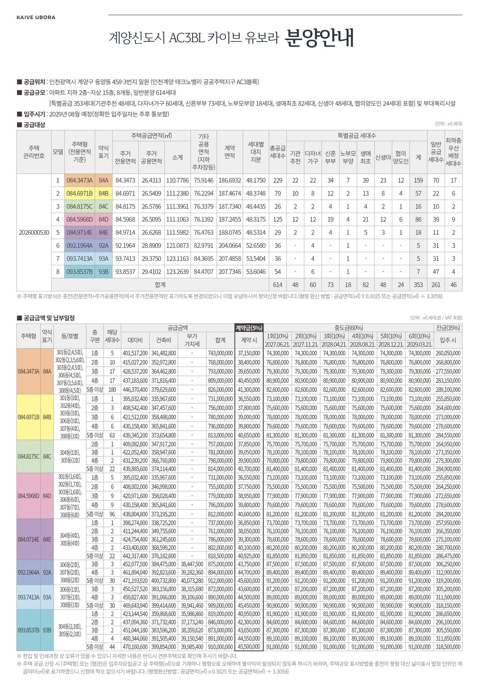
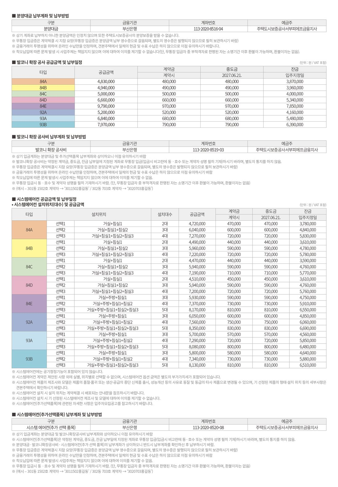
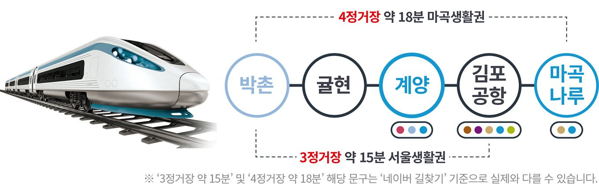
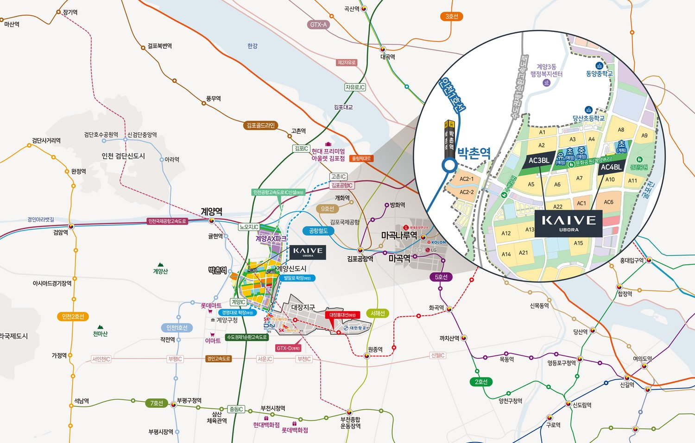

KAIVE UBORA
계양신도시
카이브 유보라
계양신도시 첫 민간분양 · AC3BL 614세대서울 단 3정거장계양신도시의 첫 시작계약금 5% · 84㎡ 7억대부터
규모지하 2층 ~ 지상 15층
AC3BL614세대
타입84 · 92 · 93㎡
입주2029년 8월 예정
SUMMARY
계양신도시 카이브 유보라 한눈에 보기
- 인천 계양구 동양동 458-3번지 일원 · 계양신도시(3기 신도시) AC3BL·AC4BL
- 지하 2층~지상 15층 · AC3BL 614세대 · 반도건설 카이브 유보라
- 전용 84㎡ A~E · 92㎡ A · 93㎡ A·B · 2029년 8월 입주 예정
- 계약금 5% · 중도금 60% · AC3BL 84㎡ 공급금액 7억대 초반부터
쾌속 교통
김포공항역 3정거장 · 마곡나루역 4정거장 · 수도권제1순환·경인고속도로
안심 학세권
단지 앞 유치원·초등학교·중학교(예정)
계양벼리
약 1km 선형 문화공원(예정) · 여의도공원 약 4배 보행특화도시
첫 민간분양
서울과 맞닿은 3기 신도시 계양신도시 첫 민간분양
계양 AX PARK
서부 첨단 산업의 축 · 자족 중심 거점
반도 유보라
커뮤니티 · 스크린골프 · 독서실 · 단지 시스템
| 타입 | 전용면적 | 공급면적 | AC3BL 세대 |
|---|---|---|---|
| 84A㎡ | 84.3473㎡ | 110.78㎡ | 229세대 |
| 84B㎡ | 84.6971㎡ | 111.24㎡ | 79세대 |
| 84C㎡ | 84.8175㎡ | 111.40㎡ | 26세대 |
| 84D㎡ | 84.5968㎡ | 111.11㎡ | 125세대 |
| 84E㎡ | 84.9714㎡ | 111.60㎡ | 29세대 |
| 92A㎡ | 92.1964㎡ | 121.09㎡ | 36세대 |
| 93A㎡ | 93.7413㎡ | 123.12㎡ | 36세대 |
| 93B㎡ | 93.8537㎡ | 123.26㎡ | 54세대 |
계양신도시 카이브 유보라 분양 상담 · 분양알리미 대표번호 1688-5650
PROJECT OVERVIEW
사업개요
- 사업명
- 인천계양지구 AC3BL 주상복합 (카이브 유보라)
- 대지위치
- 인천광역시 계양구 동양동 458-3번지 일원
- 건설규모
- 공동주택 지하 2층 ~ 지상 15층 · 근린생활·판매시설 지상 1~2층
- 세대수
- AC3BL 614세대 · AC4BL 496세대
- 대지면적
- 33,824.00㎡
- 연면적
- 131,078.65㎡
- 타입
- 84A·B·C·D·E / 92A / 93A·B
- 시공
- 반도건설
- 입주
- 2029년 8월 예정
- 납부
- 계약금 5% · 중도금 60% · 잔금 35%
공급안내 보기 (AC3BL 입주자모집공고 기준)


LOCATION
서울은 빠르게, 학교와 공원이 바로 앞

입지환경 지도

현장 주소인천광역시 계양구 동양동 458-3번지 일원 (계양 테크노밸리 AC3BL·AC4BL)
UNIT PLAN
평면안내
8개 타입 평면도
타입을 누르면 해당 도면이 열립니다.
CUSTOMER CONTACT
관심고객 접수
성함과 연락처를 남겨주시면 안내해 드립니다.
계양신도시 카이브 유보라 관련 검색어
- 계양신도시 카이브 유보라
- 카이브 유보라
- 계양 유보라
- 계양테크노밸리 아파트
- 계양신도시 아파트
- 동양동 아파트
- 계양구 아파트 분양
- 계양신도시 카이브 유보라 분양가
- 계양신도시 카이브 유보라 모델하우스
- 계양신도시 카이브 유보라 평면도
계양신도시 카이브 유보라 분양 상담 · 대표번호 1688-5650